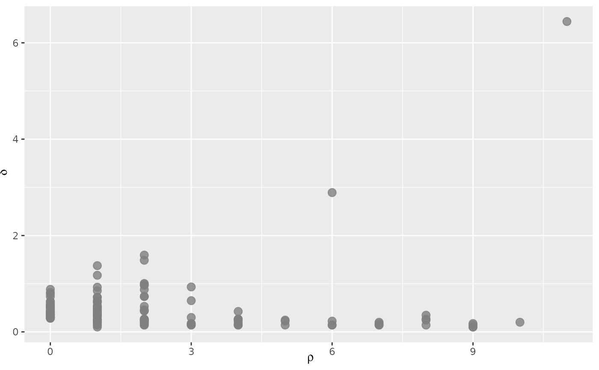

Generate a single panel of up to three diagnostic plots for a
densityClust object.
plotDensityClust(
x,
type = "all",
n = 20,
mds = NULL,
dim.x = 1,
dim.y = 2,
col = NULL,
alpha = 0.8
)A densityCluster object as produced by densityClust
A character vector designating which figures to produce. Valid
options include "dg" for a decision graph of \(\delta\) vs.
\(\rho\), "gg" for a gamma graph depicting the decrease of
\(\gamma\) (= \(\delta\) * \(\rho\)) across samples, and "mds",
for a Multi-Dimensional Scaling (MDS) plot of observations. Any combination
of these three can be included in the vector, or to produce all plots,
specify type = "all".
Number of observations to plot in the gamma graph.
A matrix of scores for observations from a Principal Components Analysis or MDS. If omitted, and a MDS plot has been requested, one will be calculated.
The numbers of the dimensions to plot on the x and y axes of the MDS plot.
Vector of colors for clusters.
Value in 0:1 controlling transparency of points in the
decision graph and MDS plot.
A panel of the figures specified in type are produced.
If designated, clusters are color-coded and labelled. If present in
x, the rho and delta thresholds are designated in the
decision graph by a set of solid black lines.
data(iris)
data.dist <- dist(iris[, 1:4])
pca <- princomp(iris[, 1:4])
# Run initial density clustering
dens.clust <- densityClust(data.dist)
#> Distance cutoff calculated to 0.2767655
op <- par(ask = TRUE)
# Show the decision graph
plotDensityClust(dens.clust, type = "dg")

# Show the decision graph and the gamma graph
plotDensityClust(dens.clust, type = c("dg", "gg"))
# Cluster based on rho and delta
new.clust <- findClusters(dens.clust, rho = 4, delta = 2)
# Show all graphs with clustering
plotDensityClust(new.clust, mds = pca$scores)
par(op)